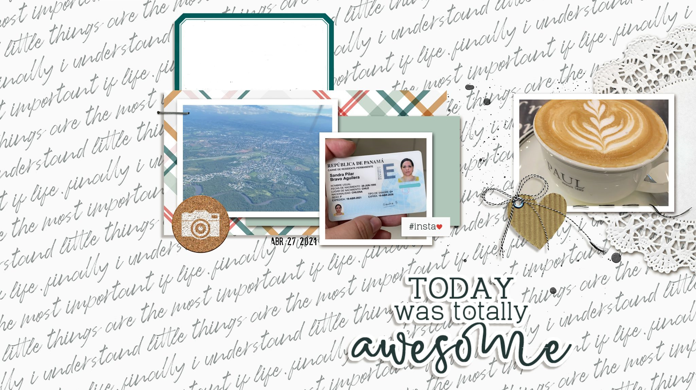

Que es un método a través del cual se plasman recuerdos, emociones o acontecimientos importantes. Se utilizan fotografías y se decoran con ayuda de papeles estampados, cintas, cartulinas, washi tape, sellos y todo tipo de adornos. La traducción literal del término "Scrapbook" significa "libro de recortes", aunque también puede tomar la forma de un álbum, una tarjeta o una lámina.